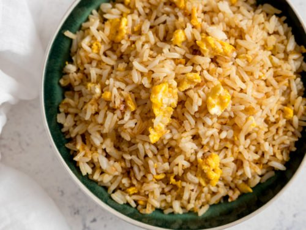

Egg Fried Rice

Description
A very simple fried rice dish that I like to make to spruce up leftover rice.
This recipe will be the current variation I make myself, but it can be customized any way you like.
Ingredients
- White Rice (best if day old)
- Egg
- Egg Whites
- Onion
- Garlic
- Salt and Garlic Powder
- Canola Oil
- Soy Sauce
Steps
- Chop up half an onion (or more or less, to your taste) and mince two or three cloves of garlic.
- Warm up some canola oil on a pan on medium heat, and throw in your onions. Cook for about 5 minutes.
- Add garlic to the pan
- Turn up the heat to high, add more canola oil, then add your rice. Cook for about 5 minutes, stirring often.
- Move your rice to one side of a pan, and add your egg and egg whites to the other side. Splash some soy sauce on the eggs. Stir until they are scrambled, but still a bit runny.
- Mix your eggs with the rice, adding more soy sauce.
- Add salt and garlic powder and continue to stir until everything is mixed together well.
- Enjoy!